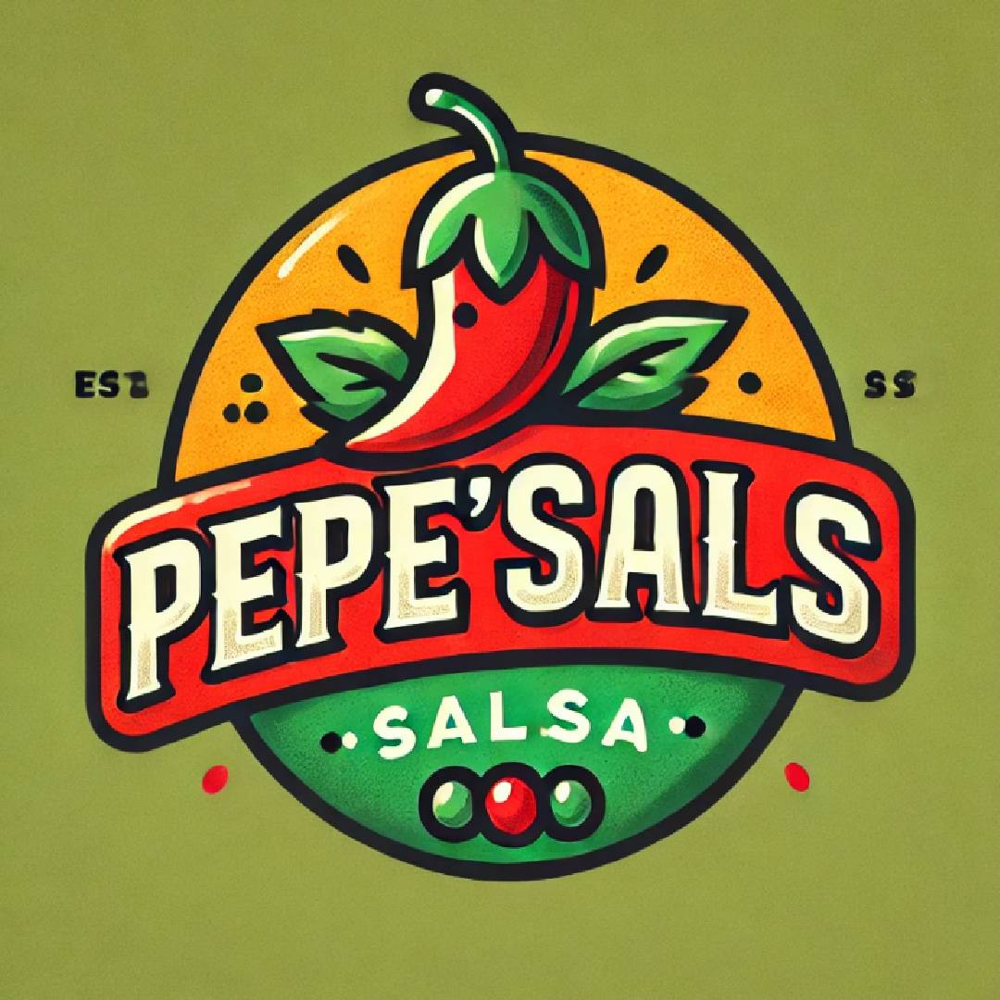

NOSOTROS

HISTORIA
Todo comenzo en nuestra cocina familiar, donde la pasion
por la comida y la experimentacion nos llevo a crear una salsa unica
y deliciosa. Al principio, era solo un hobby, una forma de
expresar nuestro amor por la gastronomia y compartirlo con nuestros seres queridos.
MISION
Crear productos de alta calidad que deleiten los paladares de nuestros clientes, manteniendo la tradicion y la pasion por la comida.
VISION
Ser una de las marcas de salsas mas reconocidas y respetadas del pais, innovando y mejorando constantemente para satisfacer a nuestros clientes.